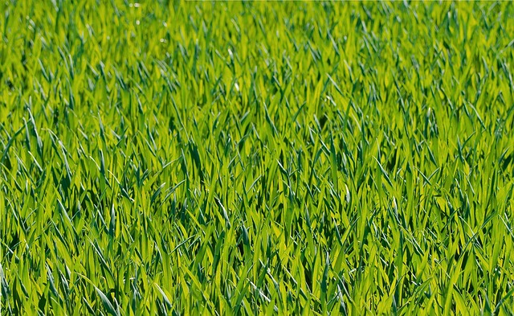

20251119誰がために声を見る

2025年の4月からわたしは日本手話の勉強をしている。ろう者の講師から日本手話という言語の使い方、ろう者の文化、ろう者が受けてきた差別についても教わっている。50名のクラスは抽選になるほどいっぱいで――それが珍しいことだ、と4月の段階で先生方がおっしゃっていたのが印象的だった――、それは秋に予定されている東京2025デフリンピックの影響かもしれない、とのことだった。デフリンピックは聞こえない・聞こえにくいスポーツ選手たちによる国際スポーツ大会で、オリンピック・パラリンピックと同様、4年に一度開催されている。そして、その100年目となる今年の会場が日本・東京であるということだった。秋も近くなってくると、いよいよ毎週毎週、デフリンピックの話を聞かされるようになった。クラスメイトたちも「〇〇の競技のボランティアをする！」とか「〇〇を観に行きたい！」とか、休み時間はそういう話でもちきりだ。わたしもその空気に乗せられて、せっかく東京に住んでいるわけだし、デフリンピックを観に行こうじゃないか！ と思った。体育はからきしだめ、通知表で2をもらったこともある、国際大会には「何が『日の丸を背負った戦い』じゃ」と愚痴を吐き捨ててきた、このわたしが、人生で初めてスポーツ観戦をする気になったのだ。なぜって、それは、わたしが日本手話の勉強に惹かれているからだ。 わたしが日本手話の勉強をするようになった理由を遡ると、大学生のころに行き着く。そのころわたしは自分のタイピングスキルを買われ、聴覚障害を持つ学生の有償ボランティア「ノートテイク」をすることになった。学生の隣にパソコンを持って座り、先生が話している講義内容をリアルタイムで打っていく。ノートテイカーには高いタイピングスキルと、人の発語の聞き取りスキルが必要になってくる。同級生の中でもずば抜けたタイピング速度があったので、この仕事はわたしにうってつけだった。 しかし、ノートテイクの仕事内容は難しい。90分の講義中、ずっとタイピングをし続けなくてはならない。わたしが主に受けていたのは「国際政治学」「日本国憲法」などの講義だった。専門用語や長い単語が多く、頭が沸騰しそうなほどに疲れる作業が続く。国連のあーだこーだ、日本国憲法のあれこれ、先生が読み上げるそれらをものすごいスピードで書いていく。「憲法尊重用語義務」なんて、もう覚えてしまったほどだ。第99条、天皇または摂政および国務大臣、国会議員、裁判官その他の公務員は、この憲法を尊重し擁護する義務を負う。 この仕事のいいところは、お金をもらいつつ勉強ができることだった。といってもボランティアだから金額は微々たるもので、わたしがこれで稼いでいたのはせいぜい月3万くらいだったと思う。それでもわたしは当時のノートテイカーの中でもわりと働いていたほうだった。ノートテイクを担当している事務局の方々にねぎらいの酒をふるまってもらったこともある（！）。大学時代、わたしはここまで聴覚障害を持つ学生と触れ合う機会があったのに、手話を勉強していなかった。「文字で書ければ十分でしょう」と思っていた。調子に乗っていたのだ。 大学時代、何度も顔を合わせて連絡を取り合った聴覚障害を持つ学生たちとは、大人になって会うことはなくなった。そもそも友達でもなんでもなく、ただの仕事相手と考えていたからだ。卒業をしてから10年以上経って、周りの手話を楽しく勉強している人に出会う機会があった。「言語学習として手話を学ぶ」ことが面白い、という。そのころまで、わたしは日本手話がひとつの言語だということを知らなかった。日本語をそのまま身振り手振りに置き換えたものが手話だと思っていた。 その認識はよくある最低の間違いで、まったくもって事実とは異なる。それを、そこからわたしは半年かけて知ることになる。空間の使い方。表情の使い方。指差しの大切さ。あいまいな表現を削り、分かりやすく表現すること。そして日本手話のクラスでろう者の文化や差別を勉強することも理にかなっていると思うようになった。マイノリティの言語は、マイノリティの歴史とともに出来上がってきたものなのだ。そして気づいた。「文字で書ければ十分でしょう」と思っていたあの頃のわたしは、日本手話よりも日本語のほうが「上」だと無意識のうちに思っていた。そして、日本語が日本手話を代替できると考えていた。あの頃のわたしは、ノートテイクはしていたけれど、聴覚障害を持つ彼女らの仲間になっていなかった。今となってこれを恥じても、彼女たちへの償いにはならなかろう。それでもわたしは今、手話に夢中になって勉強を続けている。わたしの魂の奥に響く何かがある。 スポーツ観戦の話に戻そう。そういう心理的な変化を経て、わたしは東京2025デフリンピックの会場へと向かうこととなった。目指すは二日目、バレーボール。会場は駒沢オリンピック公園の中にある体育館。まさに国際スポーツ大会にふさわしい場所だ。会場に着くなり、目を見張った。思っていたよりもかなりの人がそこにいたからだ。文字どおりの「長蛇の列」がそこにはあり、先がどこに繋がっているか分からない。概算200人ほど並んでいたかもしれない。手元のスマートフォンで状況を確認しようとしたが、SNSで「企業観覧席が多くて一般席の人がなかなか入れない！」と言っている人を見かけるだけだった。 わたしは人混みが苦手で、駒沢オリンピック公園に着くころには電車と長い道のりで疲れ果てていた。だから列には並ばず、近くにあったベンチに腰かけた。遠くから長蛇の列の動きを眺め、どう動いているか確認した。試合開始時間はもうすぐ。しかし、まったく様子は変わらなかった。というか、分からなかった。 素人目にも理解できるのは、デフリンピック運営側の手札の少なさだった。試合開始時間までにこの200人ほどの人間を会場に入れることは不可能だろう。「あの時間から始まる、あの選手をどうしてもこの目で見たい！」そう考えている人たちはどうしたらいいのか？ さっぱり分からなかった。遠くのベンチから待機列を眺めていると、そこに多く並んでいるろう者の方々の会話が目に留まる。手話で話しているから、何を言っているのかなんとなくは分かるのだ。「今、どうなっているの？」「もう試合はじまってる？」そんなことを言っているように見えた。とにかく、分からない。情報保障がないのだ――ホワイトボードもなければ、電光掲示板もない。プラカードを持ってお知らせすることもできるだろう。日本手話の授業でさんざん習ってきた、有事の情報がなかなか入ってこない状態を、その時目の当たりにしていた。あろうことか、デフリンピックの場で！ こころも身体もへとへとになってしまい、わたしは妻に付き添われるようにして会場をあとにした。帰る途中、わたしのように観戦からあぶれた人たちが、YouTubeで試合を観ている様子が見えた。それで、家に帰ったあと、わたしもYouTube配信を観てみた。今度はバスケットボールを観てみた。手話の教室に通う仲間が観に行っていると言っていたのを思い出したからだ。驚愕だった。YouTube配信は、定点カメラがひとつ置かれているだけだった。手前側のコートはもう試合が終わってがらんどうになっている。奥で行なわれているのがバスケットボール男子の試合で、日本選手が出ていると思われた。もちろん、どの選手が何をしているのか分からないし、そもそもゴールすら見えない状態だ。これを「配信」と言いきる図太さ。わたしはその日目にした様々なもので衝撃を受けすぎてしまって、頭がフリーズしていくのを感じた。そして同時に、これを喜ばなければならない、これをありがたがっている人たち、これでまだマシと言わなければいけない状況にくらくらした。 デフリンピックの運営団体は、国際ろう者スポーツ委員会（ICSD）という。ICSDのロゴは、重なり合った線の間に白い円がある。この中央部分は目を表している。ろう者は「見て」コミュニケーションを取ることの多い人たちだからだ。 そうであれば、デフリンピックの試合は、なおのこと「見え」なければ意味がない。 しかし、そんな事態を目の前にしたわたしに、何ができるのか。大会運営の方針をわたしが決めることはできない。ボランティアもできない。とにかくこれがおかしいということを書きたくて、わたしは今このコラムを書いた。でもそれによって何がどう変わるのか、わたしには分からない。 今振り返ってみると、わたしは手話の勉強に導かれるべくしてやってきたのかもしれないと思う。わたしは執筆をして生きているが、その大テーマに「差別」があることを、既にわたしは知っている。これまでわたしの書いてきたものは多かれ少なかれ「差別」の話をしていて、今も「差別」の話をしている。興味分野が変わっていくことはあるだろうが、その事実は変わらない。 誰かが困っている。誰かが不安を感じている。誰かが怒っている。それがどうしてなのか見たいし、聞きたいし、話したい、書きたい。わたしにはそういう思いがある。わたしの中で、手話を勉強したり、レズビアンとして生きることについて語ったりすることは、わたしが生きることと同義である。そしてそれらは全て地続きの話なのだ。 誰がために声を見る。わたしは困っている人たちのために声を見たい。声を見られますよ、というパフォーマンスではなくて、声を見たい。絵空事かもしれないが、今はそんな風に思わざるを得ない。